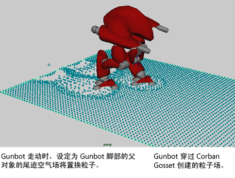
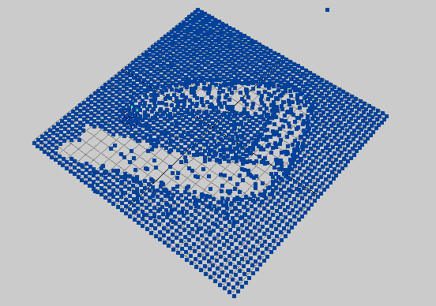

空气场会模拟移动空气的效果。加快或降低连接到空气场的对象的速度，以便在播放动画时使其速度与空气速度一致。
您可以将对象的移动部分设置为空气场的父对象来模拟移动部分的空气尾迹。例如，如果某个角色漫走过地面上的树叶或灰尘，则可以将脚设置为空气场的父对象。

有关空气场中属性的描述，请参见。“风”(Wind)、“尾迹”(Wake)和“扇”(Fan)按钮将空气场属性设置为适用于每个效果的默认设置。如果单击其中一个按钮，您仍可以根据需要调整设置。
示例：创建移动对象的空气尾迹

- 创建粒子栅格或 nParticle 栅格。
- 在选定粒子的情况下，选择 >
 以显示选项窗口。
以显示选项窗口。 - 单击“尾迹”(Wake)。
- 单击“创建”(Create)。创建空气场后，它会连接到粒子。
- 创建一个球体。
- 为球体添加关键帧以穿过粒子栅格（在 XZ 平面上）。
- 选择尾迹（在“大纲视图”(Outliner)中），按住 Shift 键的同时选择该球体，然后选择。这会将球体设置为尾迹的父对象。
- 播放动画。